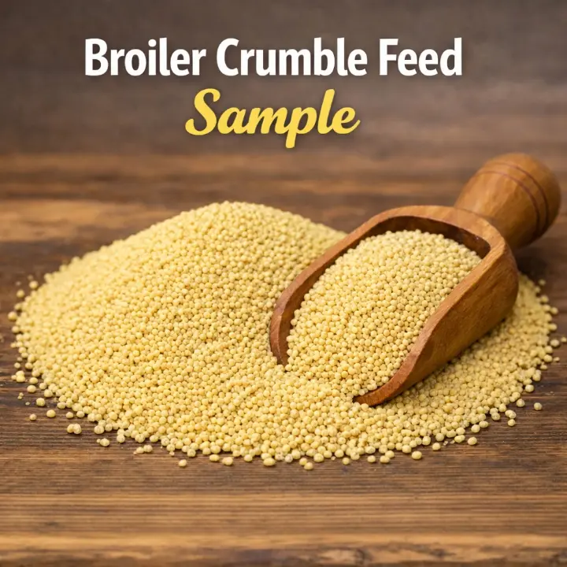
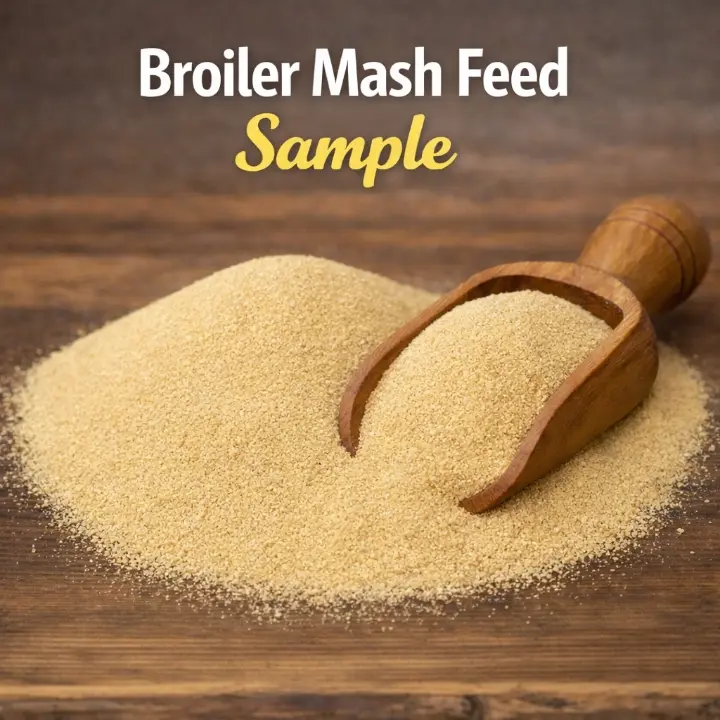
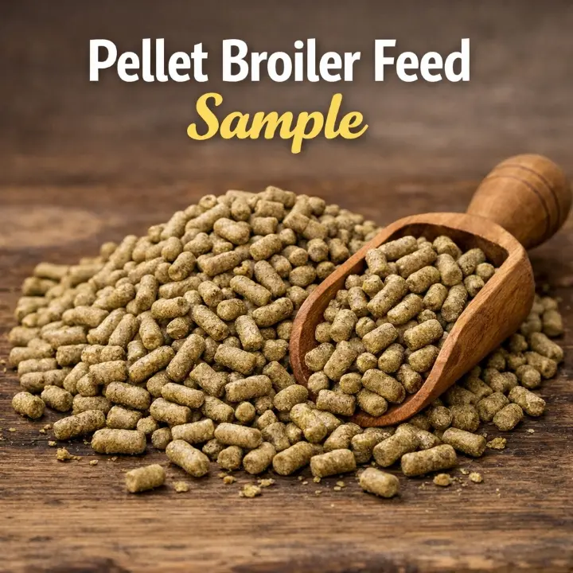

The Poultry Tip Site
The Poultry Tip Site
Broiler Feeding Guide
Broiler chickens grow quickly and need a balanced feeding programme to achieve good health, efficient feed conversion, and a suitable market weight. The right feed should be selected according to the birds' age, target weight, and the manufacturer's nutritional specifications.
Choosing broiler feed
Broiler feed is given in stages as the birds grow. A typical feeding sequence begins with super-starter feed and ends with finisher feed. Some feeding programmes also include starter feed between the super-starter and finisher stages. The feeding sequence may vary between feed brands.
The sections below discuss the different types of broiler feed, including their feeding periods, nutritional specifications, available forms, and quality considerations. They also explain how to introduce finisher feed gradually after the super-starter or starter stage.
Super-starter and starter feed
Super-starter feed is usually given to broiler chicks during the first two to four weeks of life. However, the recommended feeding period may vary between manufacturers. For example, some reputable brands recommend feeding super-starter for the first two weeks, followed by starter feed for another two weeks. Where the manufacturer provides this type of programme, it is advisable to follow the instructions on the feed label.
For brands that do not specify a shorter feeding period, super-starter may be used throughout the first four weeks.
One important quality to consider when choosing super-starter feed is its crude protein content. Many good-quality super-starter feeds contain at least 22% crude protein. In feed programmes that recommend two weeks of super-starter followed by two weeks of starter feed, the starter feed from the same brand commonly contains 20% crude protein.
Super-starter and starter feeds are commonly available in two forms: mash and crumble. Crumble is often easier for young chicks to pick up and consume. Whichever form you choose, the feed should be fresh and stored properly.
Many feed manufacturers offer both commercial and professional versions of their super-starter, starter, and finisher feeds. Professional feeds are generally the better choice because they are formulated to provide a more consistent and nutritionally balanced diet. These benefits are especially important during the super-starter and starter phases, when broiler chicks are developing rapidly.
Farmers are therefore strongly advised to use professional feed during the super-starter and starter stages whenever it is available and affordable. During the finisher stage, however, a good-quality commercial finisher may be used as a more economical alternative, provided that it meets the recommended nutritional specifications.
For the best results, choose a reliable feed and follow the manufacturer’s feeding programme. Provide the birds with clean water at all times, and monitor their feed intake, body weight, growth, and general health.


Finisher feed
Finisher feed is introduced after the super-starter or starter stage. From day 26, it is gradually introduced by mixing it with the birds' current feed. The proportion of finisher feed is increased each day until the birds receive 100% finisher feed from day 29 onward.
Finisher feed is commonly available in pellet form, although mash is also available. Two important nutritional specifications to consider when choosing finisher feed are its crude-protein content and metabolizable-energy level. A good-quality broiler finisher should contain at least 18% crude protein and 3,000 kcal/kg or more of metabolizable energy.

Transitioning from Super-Starter or Starter to Finisher
The four-day transition from super-starter or starter feed to finisher feed is shown in the table below.
| Day | Starter or super-starter | Finisher |
|---|---|---|
| Day 26 | 75% | 25% |
| Day 27 | 50% | 50% |
| Day 28 | 25% | 75% |
| Day 29 onward | 0% | 100% |
Feeding Programmes
The best feeding programme depends on how fast you want to sell or consume the birds and your target market weight. Broilers are commonly reared over one of two timelines: 5–6 weeks, or 8–10 weeks. Both are outlined below.
Five- to Six-Week Production
Broilers have been genetically selected for efficient feed conversion, which makes it possible for them to reach a meaningful carcass weight within this short timeline. For the best result, high-quality (professional) feed should be used, especially during the super-starter or starter phase. Birds on this programme should have feed available at all times (ad libitum), and appropriate lighting should be provided so they can locate feed and water easily.
Depending on the brand, super-starter is fed for either two weeks (followed by two weeks of starter) or for the full four weeks. Finisher is then introduced gradually from day 26–28, as covered in the transition schedule above, before switching to 100% finisher from day 29 onward.
With this approach, farmers can generally expect a carcass weight of around 2.2–2.7 kg by week 5, and 2.8–3.0 kg or more by week 6, depending on factors like feed quality, disease control, and overall flock management.
Eight- to Ten-Week Production
For this longer cycle, birds should have unrestricted (ad libitum) access to feed during the first two weeks, with appropriate lighting provided at night. Broilers naturally consume less at this early age, so this is manageable.
From the third week onwards, feed rationing can begin. During this stage, ensure enough feed is put into the feeder at each feeding time — avoid pouring just a little, as broilers need adequate quantity to keep growing well even while on a rationing schedule. Feed can be offered in the morning (around 7:45–8:00 AM) and in the late afternoon (around 4:00 PM). At night, lights around the pen should be switched off to keep it dark and settle the birds.
For good carcass weight on this timeline, use quality super-starter throughout, or super-starter followed by starter feed (for brands that specify a two-week switch). After the super-starter or starter stage, gradually introduce finisher feed according to the transition schedule above. Provide clean water continuously at every stage.
Important reminders
- Provide clean, fresh water at all times.
- Store feed in a cool, dry, well-ventilated place away from rodents and moisture.
- Do not use feed that is mouldy, wet, spoiled, or contaminated.
- Check that feeders are clean and accessible to all birds.
- Monitor body weight, feed intake, mortality, and flock uniformity.
- Avoid restricting feed too severely — inadequate nutrition can harm growth and flock uniformity.
- Follow the manufacturer's feeding instructions.